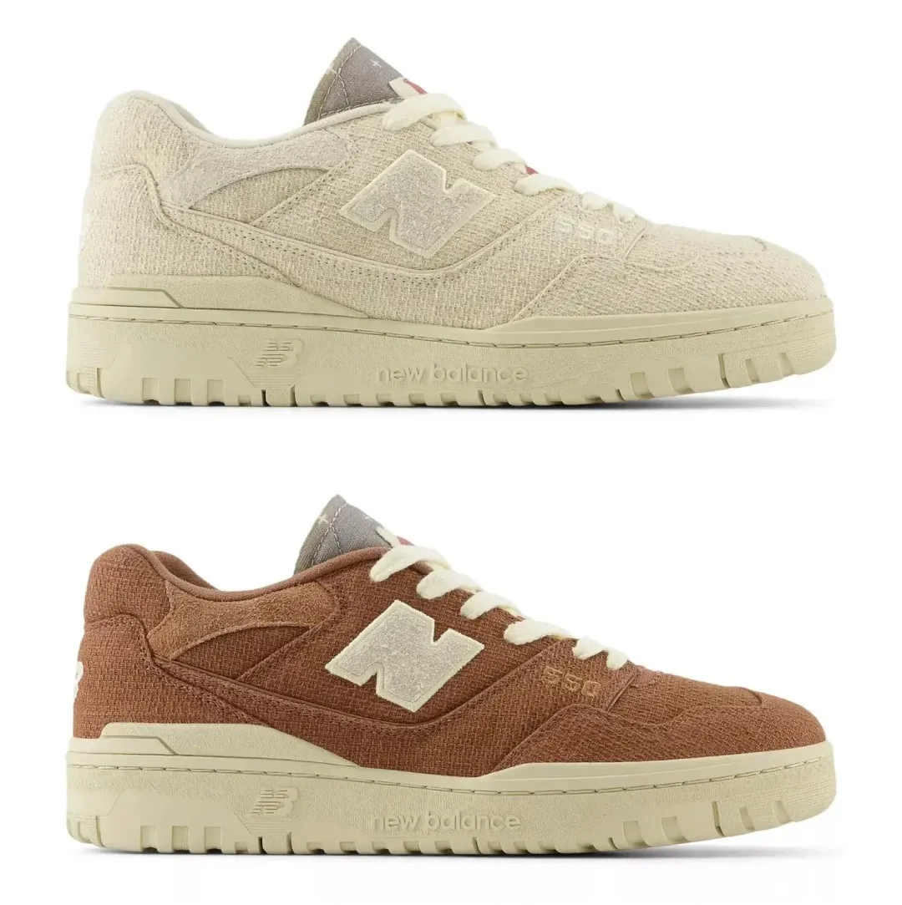

A técnica milenar japonesa do sashiko se encontra com a filosofia da NEW BALANCE para criar duas novas versões do 550, com tons de “Linho” e “Pecan”.

Por se tratar de uma técnica de costura para reforço decorativo ou bordado funcional, muito
presenta nas
eras Edo e Meiji do império japonês, tem forte influência na escolha do tecido grosso que veste a face
externa do cabedal com uma fibra resistente e durável na composição. Outras características adotadas foram a
preocupação em acoplar materiais propícios aos dias frios, por isso vemos painéis de camurça próximos ao
colarinho dos pares e a língua recebe os adornos tradicionais do método de costura hitomezashi, com padrão
de grade no tracejado e retalhos.
Fugindo dos tão ambientados tons de azul e compostos por jeans, esse duo traz mais contexto histórico que
visual artístico do enredo. Ambos recebem cadarços de fios de algodão, como o que é utilizado desde muito
tempo para realizar as costuras dessa história.
Sua disponibilidade ocorre de forma virtual no NewBalance.com, a plataforma internacional da marca.